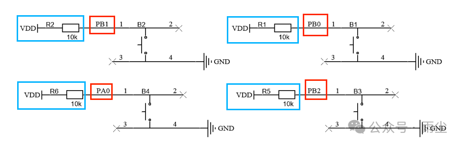
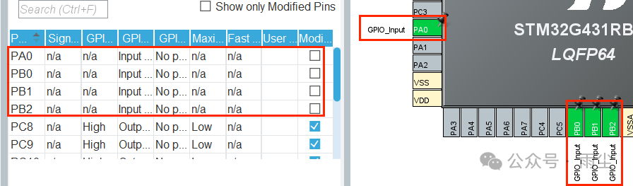
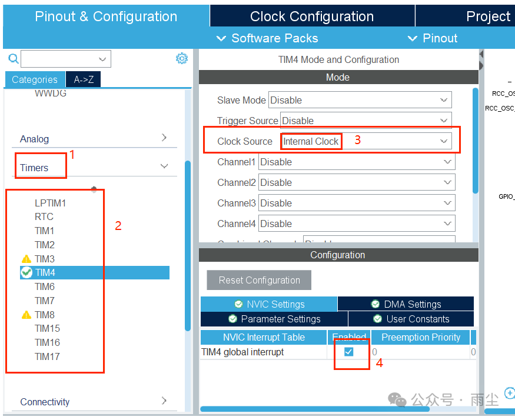
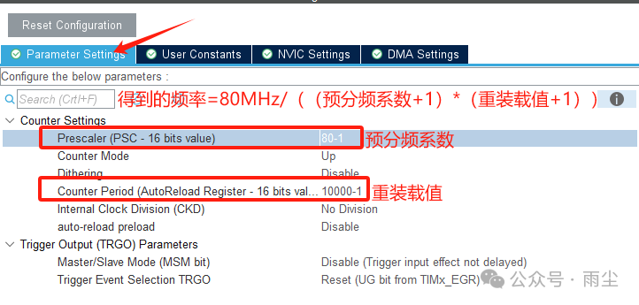
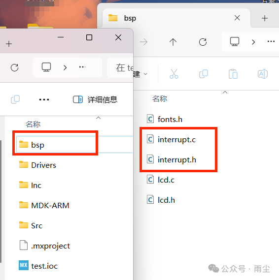
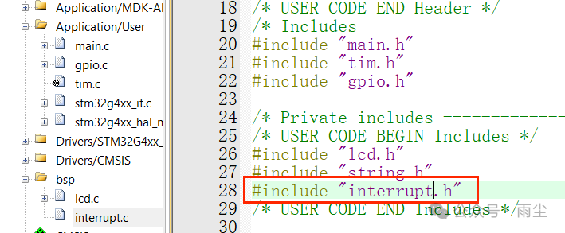
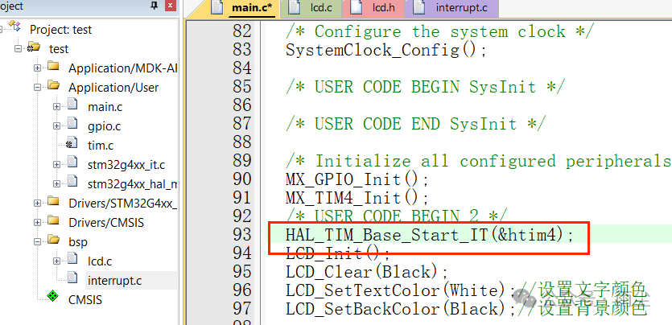

3、蓝桥杯嵌入式—HAL库-按键单击
原载微信公众号，阅读微信原文 ↗
1、配置引脚和定时器

图片来源：《CT117E-M4产品手册》
1.从图中可以得知按键引脚情况以及所需配置如下：
| 按键代号 | 按键引脚代号 | 输入模式 | 需要配置模式 |
|---|---|---|---|
| B1 | PB0 | 硬件上拉 | 浮空输入 |
| B2 | PB1 | 硬件上拉 | 浮空输入 |
| B3 | PB2 | 硬件上拉 | 浮空输入 |
| B4 | PA0 | 硬件上拉 | 浮空输入 |
按键在cubeMX中的配置如下：

2.配置定时器


我们可以在timers中任意选择其中的一个定时器，假设我们选择的定时器为TIM4，则需要开启该定时器的外部时钟和中断回调功能，随后配置分频系数和重装载值。
计算周期和分配系数与重装载值：每个计数周期=外部时钟频率/((分频系数-1)x(重装载值-1))，关于为何要减一，小雨也是不太清楚 ，有知道的伙伴可以留言指导指导
，有知道的伙伴可以留言指导指导
2、代码撰写
1.源文件加载
我们先来创建一个中断函数库（例如：interrupt.c和interrupt.h）。如果已了解则跳过。
创建方法：
a.找到Inc同级文件夹，新建一个自命名函数库文件夹（如命名为bsp文件夹）打开bsp文件夹，新建两个text文件，重命名为interrupt，分别更改后缀为.h和.c

b.按照2、蓝桥杯嵌入式—HAL库TFT-LCD步骤2加载源文件进行源文件的添加
2.代码配置
1.在main.c文件中我们首先要包含到interrupt.h头文件，然后在主函数中使用HAL_TIM_Base_Start_IT(&htim4);开启定时器4中断回调功能函数。


2.在interrupt.h文件中
#ifndef __INTERRUPT_H
#define __INTERRUPT_H
#include "main.h"
struct keys{
bool key_level;//按键电平读取值，根据上文（按键已经配置了硬件上拉电阻）因此默认不被按下时的电平为1
bool key_state;//按键状态，我们约定状态值为1时，按键处于按下状态，反之放松状态
uint8_t key_index；//用于按键消抖
};
void HAL_TIM_PeriodElapsedCallback(TIM_HandleTypeDef *htim);
#endif
//最后需要空一行，否则会报警3.在interrupt.c文件中
#include "interrupt.h"
struct keys key[4]={0};
void HAL_TIM_PeriodElapsedCallback(TIM_HandleTypeDef *htim)
{
if(htim->Instance==TIM4)
{//读取按键电平状态
key[0].key_level=HAL_GPIO_ReadPin(GPIOB,GPIO_PIN_0);
key[1].key_level=HAL_GPIO_ReadPin(GPIOB,GPIO_PIN_1);
key[2].key_level=HAL_GPIO_ReadPin(GPIOB,GPIO_PIN_2);
key[3].key_level=HAL_GPIO_ReadPin(GPIOA,GPIO_PIN_0);
for(uint8_t i=0;i<4;i++)//遍历按键
{
switch(key[i].key_index)//判断按键状态
{
case 0://当按键从放松到被按下时
if(key[i].key_level==0)
{
key[i].key_index=1;
}
else
{
key[i].key_index=0;
}
break;
case 1://当按键从放松到被按下一个回调周期后
if(key[i].key_level==0)
{
key[i].key_state=1;
key[i].key_index=0;
}
break;
case 2://当按键放松时
if(key[i].key_level==1)
{
key[i].key_index=0;
}
break;
}
}
}
}3.代码使用
我们使用点灯操作来练习
/* Infinite loop */
/* USER CODE BEGIN WHILE */
while (1)
{
if(key[0].key_state==1)//按下B1按键点亮LD1
{
led(0x01);
key[0].key_state=0;
}
if(key[1].key_state==1)//按下B2按键熄灭LD1
{
led(0x00);
key[1].key_state=0;
}
/* USER CODE END WHILE */
/* USER CODE BEGIN 3 */
}
/* USER CODE END 3 */以上即是蓝桥杯嵌入式按键单击操作
评论
登录 GitHub 即可发表评论。评论公开保存在 GitHub Issues。